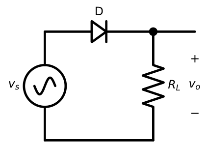
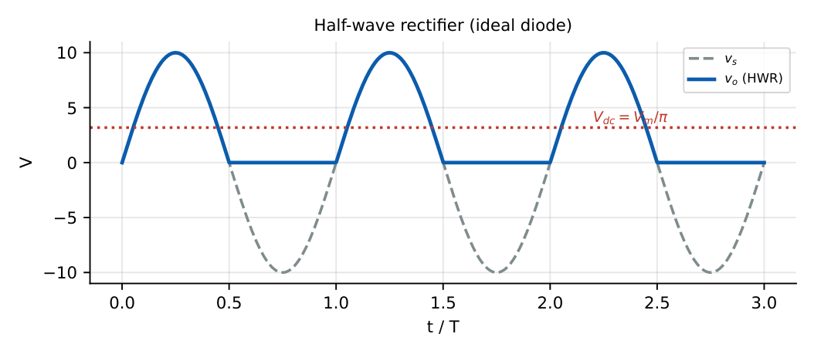
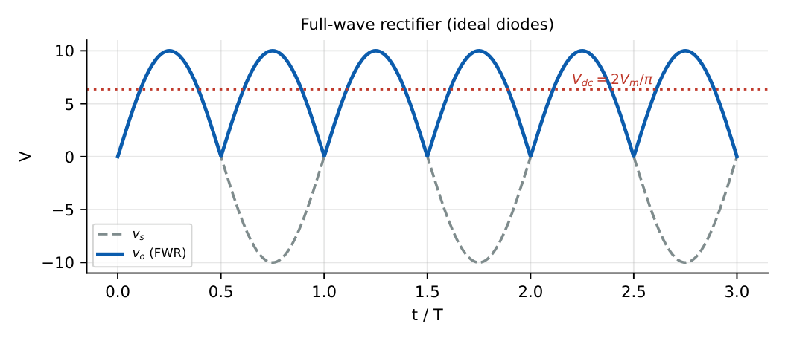
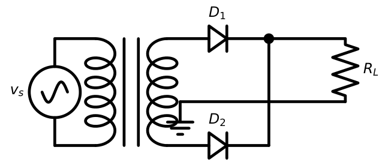
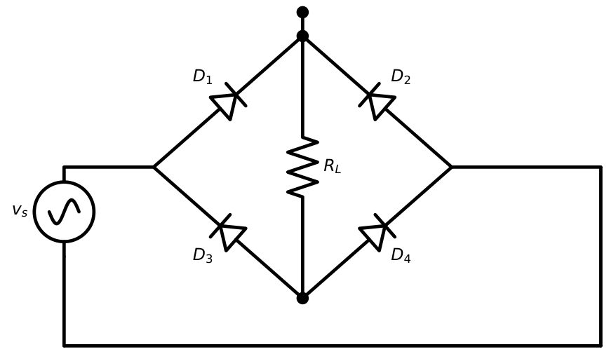
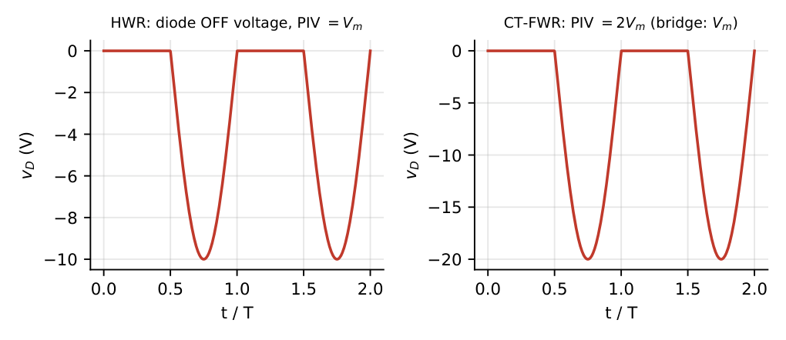
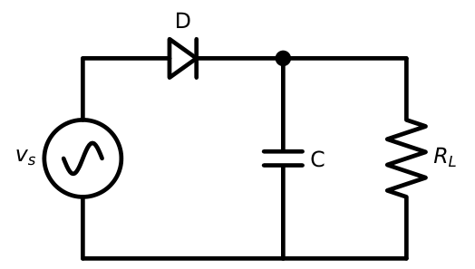
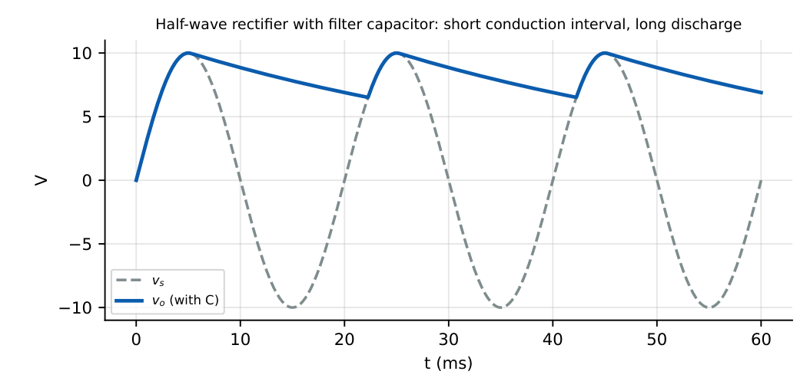
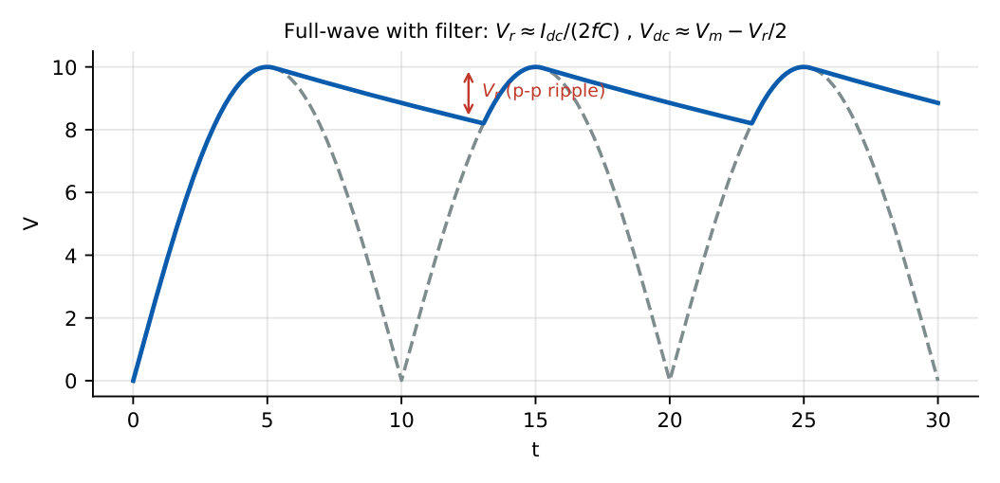

Rectifiers
In this chapter
- 5.1 Half-wave rectifier
- 5.2 Full-wave rectifier
- 5.3 Centre-tapped rectifier
- 5.4 Bridge rectifier
- 5.5 Average and RMS output voltage
- 5.6 DC load current
- 5.7 Ripple factor
- 5.8 Rectifier efficiency
- 5.9 Peak inverse voltage
- 5.10 Transformer utilization factor
- 5.11 Capacitor-filtered rectifiers
- 5.12 Ripple voltage
- 5.13 Diode conduction angle
- 5.14 Voltage regulation
- 5.15 Comparison of rectifier configurations
- 5.16 GATE numerical problems
5.1 Half-wave rectifier
One diode in series with the load passes one half of every input cycle.


With \(v_s=V_m\sin\omega t\), diode resistance \(r_f\) and load \(R_L\): \(i=I_m\sin\omega t\) for \(0<\omega t<\pi\), where \(I_m=V_m/(r_f+R_L)\).
\(I_{dc}=\dfrac1{2\pi}\int_0^\pi I_m\sin\theta\,d\theta=\dfrac{I_m}{\pi}\),
\(I_{rms}=\sqrt{\dfrac1{2\pi}\int_0^\pi I_m^2\sin^2\theta\,d\theta}=\dfrac{I_m}{2}\).
Hence \(V_{dc}=I_{dc}R_L=\dfrac{V_m}{\pi}\) (ideal diode) and \(V_{rms,o}=\dfrac{V_m}2\).
5.2 Full-wave rectifier
A full-wave rectifier passes both half-cycles in the same direction across the load: \(|v_s|\) (for an ideal circuit). Average and RMS over one period of \(|\sin|\): \[I_{dc}=\frac{2I_m}{\pi},\qquad I_{rms}=\frac{I_m}{\sqrt2}.\]

5.3 Centre-tapped rectifier
A transformer with a centre-tapped secondary and two diodes: each diode conducts on alternate half-cycles and each sees only half of the total secondary voltage in the forward direction.

Each half-secondary supplies \(V_m\) (peak). Output: \(V_{dc}=2V_m/\pi\) where \(V_m\) is the peak of one half of the secondary. When one diode conducts, the other is reverse biased by the full secondary voltage \(2V_m\): PIV \(=2V_m\).
5.4 Bridge rectifier
Four diodes and a plain (no tap) secondary: two diodes conduct in each half-cycle (\(D_1,D_4\) when the top terminal is positive; \(D_2,D_3\) otherwise).

The output is \(|v_s|-2V_{on}\) (two diode drops in series). PIV of each diode \(=V_m\) (just the peak secondary voltage). Requires no centre tap, so the transformer is smaller.
5.5 Average and RMS output voltage
| Quantity | Half-wave | Full-wave (CT or bridge) |
|---|---|---|
| \(V_{dc}\) | \(V_m/\pi=0.318V_m\) | \(2V_m/\pi=0.637V_m\) |
| \(V_{rms}\) | \(V_m/2=0.5V_m\) | \(V_m/\sqrt2=0.707V_m\) |
| Ripple frequency | \(f\) | \(2f\) |
With real diode: replace \(V_m\) by \(V_m-V_{on}\) (bridge: \(V_m-2V_{on}\)).
5.6 DC load current
\[I_{dc}=\frac{V_{dc}}{R_L}=\begin{cases}\dfrac{I_m}{\pi}, & \text{half-wave}\\[6pt]\dfrac{2I_m}{\pi}, & \text{full-wave}\end{cases},\qquad I_m=\frac{V_m}{R_L+r_f}\ (\text{HW; FW CT})\ \text{or}\ \frac{V_m}{R_L+2r_f}\ (\text{bridge}).\]
5.7 Ripple factor
The ripple factor measures how much AC remains on the DC output.
\(\gamma=\dfrac{V_{ac,rms}}{V_{dc}}=\sqrt{\left(\dfrac{V_{rms}}{V_{dc}}\right)^2-1}=\sqrt{F^2-1}\), with form factor \(F=V_{rms}/V_{dc}\).
Half-wave: \(F=\pi/2=1.57\), \(\gamma=1.21\). Full-wave: \(F=\pi/(2\sqrt2)=1.11\), \(\gamma=0.482\).
5.8 Rectifier efficiency
\(\eta=\dfrac{P_{dc}}{P_{ac,in}}=\dfrac{I_{dc}^2R_L}{I_{rms}^2(R_L+r_f)}\). For \(r_f=0\): half-wave \(\eta=\dfrac{4}{\pi^2}=40.6\%\), full-wave \(\eta=\dfrac{8}{\pi^2}=81.2\%\). With \(r_f\): \(\eta=\eta_{max}/(1+r_f/R_L)\).
Half-wave rectifier, \(V_m=100\) V, \(r_f=100\ \Omega\), \(R_L=900\ \Omega\). \(I_m=0.1\) A. \(I_{dc}=31.8\) mA, \(V_{dc}=28.6\) V, \(I_{rms}=50\) mA. \(P_{dc}=0.0318^2\times900=0.910\) W; \(P_{ac}=0.05^2\times1000=2.5\) W; \(\eta=36.4\%=40.6\%/(1+0.111)\) \(\checkmark\).
5.9 Peak inverse voltage
PIV is the maximum reverse voltage across an OFF diode.
| Circuit | PIV |
|---|---|
| Half-wave | \(V_m\) (no filter); \(2V_m\) with capacitor filter |
| Centre-tap full-wave | \(2V_m\) |
| Bridge | \(V_m\) |

In the half-wave rectifier with a filter capacitor the capacitor holds \(+V_m\) while the source swings to \(-V_m\): PIV \(=2V_m\), not \(V_m\).
5.10 Transformer utilization factor
\(\mathrm{TUF}=P_{dc}/(\text{VA rating of the transformer})\). Half-wave: \(0.287\). Full-wave centre-tap: \(0.693\) (secondary \(0.574\), primary \(0.812\); average \(0.693\)). Bridge: \(0.812\). Half-wave has a low TUF because the secondary carries a DC component which may saturate the core.
5.11 Capacitor-filtered rectifiers
A large capacitor across \(R_L\) charges to the peak and discharges slowly through \(R_L\) (Figure 5.6).


5.12 Ripple voltage
Approximate the discharge as a linear ramp at constant \(I_{dc}=V_{dc}/R_L\) over the interval between peaks (\(T_{r}=1/f_r\) for ripple frequency \(f_r\)):
Peak-to-peak ripple \(V_r=\dfrac{I_{dc}}{f_rC}\): half-wave \(f_r=f\); full-wave \(f_r=2f\).
\(V_{dc}\approx V_m-\dfrac{V_r}{2}\), ripple factor (RMS triangle) \(\gamma=\dfrac{V_r}{2\sqrt3\,V_{dc}}\).
Full-wave: \(\gamma=\dfrac1{4\sqrt3\,fCR_L}\); half-wave: \(\gamma=\dfrac{1}{2\sqrt3\,fCR_L}\).

Full-wave, \(f=50\) Hz, \(I_{dc}=100\) mA, \(C=2200\ \mu\)F: \(V_r=0.1/(100\times2200\times10^{-6})=0.45\) V p-p. The half-wave circuit with the same numbers has double ripple: \(0.91\) V.
Full-wave, \(C=1000\ \mu\)F, \(R_L=100\ \Omega\), \(f=50\) Hz: \(\gamma=1/(4\sqrt3\times50\times10^{-3}\times100)=1/34.6=2.9\%\).
5.13 Diode conduction angle
With a filter capacitor the diode conducts for a short interval \(\Delta\theta\) around each peak. For small ripple: \[\omega\Delta t\approx\sqrt{\frac{2V_r}{V_m}},\quad i_{D,avg}=I_{dc}\left(1+\pi\sqrt{\frac{2V_m}{V_r}}\right),\quad i_{D,max}=I_{dc}\left(1+2\pi\sqrt{\frac{2V_m}{V_r}}\right)\ (\text{half-wave}).\]
\(V_m=10\) V, \(V_r=0.5\) V: \(\omega\Delta t=\sqrt{0.1}=0.316\) rad \(=18.1^\circ\). Average diode current during conduction \(=I_{dc}(1+\pi\sqrt{40})=20.9\,I_{dc}\): the diode must be rated for currents many times the load current.
A larger \(C\) (smaller ripple) gives a narrower conduction angle and higher surge current.
5.14 Voltage regulation
\[\text{VR}\%=\frac{V_{NL}-V_{FL}}{V_{FL}}\times100.\] For an unfiltered rectifier, \(V_{dc}=V_{dc,0}-I_{dc}r_f\) (HW) so VR \(=r_f/R_L\) approximately. For capacitor filters, \(V_{dc}\) falls with load because \(V_r\propto I_{dc}\): \(V_{dc}=V_m-I_{dc}/(2f_rC)\), a linear droop with slope \(-1/(2f_rC)\) (an “output resistance”).
Full-wave, \(V_m=15\) V, \(f=50\) Hz, \(C=2000\ \mu\)F. Output resistance \(=1/(2\times100\times2000\times10^{-6})=2.5\ \Omega\). At \(I_{dc}=200\) mA: \(V_{dc}=15-0.2\times2.5=14.5\) V. At no load \(V_{dc}=15\) V, so VR \(=3.4\%\).
5.15 Comparison of rectifier configurations
| Half-wave | Centre-tap FW | Bridge FW | |
|---|---|---|---|
| Diodes | 1 | 2 | 4 |
| \(V_{dc}\) | \(V_m/\pi\) | \(2V_m/\pi\) | \(2V_m/\pi\) |
| Ripple factor | 1.21 | 0.482 | 0.482 |
| Efficiency (max) | 40.6% | 81.2% | 81.2% |
| PIV | \(V_m\) | \(2V_m\) | \(V_m\) |
| TUF | 0.287 | 0.693 | 0.812 |
| Ripple frequency | \(f\) | \(2f\) | \(2f\) |
| Diode drop in path | 1 | 1 | 2 |
| Transformer | any | centre tap | any |
5.16 GATE numerical problems
Q1. A half-wave rectifier is fed with \(v_s=20\sin\omega t\) and \(R_L=1\) k\(\Omega\) (ideal diode). \(V_{dc}\) (V) is .
Q2. The ripple factor of an ideal full-wave rectifier is (A) 1.21 (B) 0.482 (C) 0.121 (D) 0.406.
Q3. A bridge rectifier uses Si diodes and a transformer secondary of \(12\sin\omega t\) V. The DC output voltage is V (ideal filtering by average value).
Q4. The PIV of each diode in a centre-tap rectifier whose full secondary is \(2\times10\) V peak per half is (A) 10 (B) 20 (C) 40 (D) 5 V.
Q5. A full-wave rectifier of \(50\) Hz mains has \(C=1000\ \mu\)F and \(I_{dc}=50\) mA. The peak-to-peak ripple (V) is .
Q6. For a half-wave rectifier the ratio of rectification efficiency to that of a full-wave (ideal diodes) is (A) 1 (B) 1/2 (C) 2 (D) 1/4.
Answers: Q1: \(20/\pi=6.37\) V. Q2: (B). Q3: \(|v|-1.4\): \(V_{dc}=2(12-1.4)/\pi=6.75\) V (approx). Q4: (B) \(=20\) V. Q5: \(V_r=I_{dc}/(2fC)=0.05/(100\times1000\times10^{-6})=0.5\) V. Q6: (B).
- A bridge rectifier delivers \(9\) V DC to a \(100\ \Omega\) load. Peak secondary voltage needed (ideal)? [14.1 V]
- Efficiency of an HW rectifier with \(r_f=50\ \Omega\), \(R_L=450\ \Omega\). [36.5%]
- Find \(C\) so that the ripple of a full-wave \(60\) Hz supply at \(500\) mA is \(1\) V p-p. [4167 \(\mu\)F]
- Compute PIV for a HW rectifier with capacitor filter and \(V_m=12\) V. [24 V]
- Why does the bridge need only \(V_m\) PIV rating? [Only one diode’s OFF voltage, equal to secondary peak, is across an OFF diode]